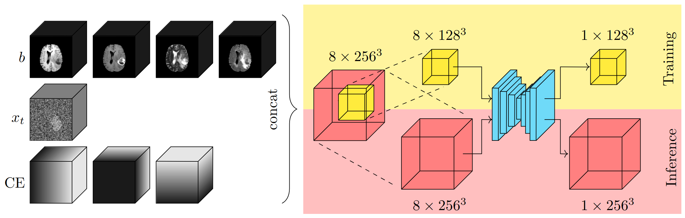
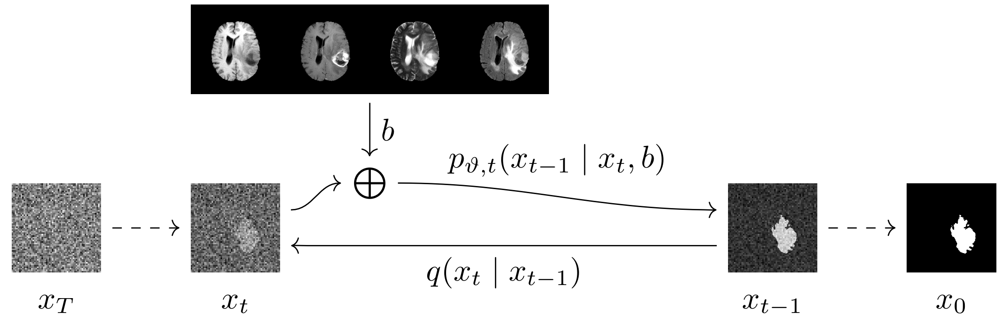
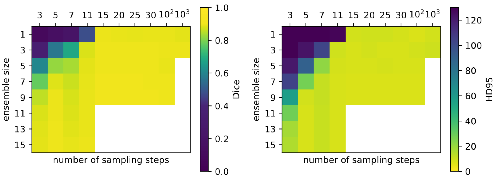

Abstract
Denoising diffusion models have recently achieved state-of-the-art performance in many image-generation tasks. They do, however, require a large amount of computational resources. This limits their application to medical tasks, where we often deal with large 3D volumes, like high-resolution three-dimensional data. In this work, we present a number of different ways to reduce the resource consumption for 3D diffusion models and apply them to a dataset of 3D images. The main contribution of this paper is the memory-efficient patch-based diffusion model PatchDDM, which can be applied to the total volume during inference while the training is performed only on patches. While the proposed diffusion model can be applied to any image generation task, we evaluate the method on the tumor segmentation task of the BraTS2020 dataset and demonstrate that we can generate meaningful three-dimensional segmentations.
Fig. 1: Overview of our proposed method PatchDDM. The diffusion model is optimized in memory efficiency and speed by training only on coordinate-encoded patches. The input consists of noised xt, the volumes b that are to be segmented and which are provided as a condition for the segmentation, as well as a coordinate encoding CE for the patches. During sampling, the whole 3D volume can be processed at once.
Contribution
In this work, we introduce architectural changes to the state-of-the-art diffusion model implementation, enabling to train on large 3D volumes with commonly available GPUs. We adapt the U-Net-like architecture to improve the speed and memory efficiency. Furthermore, we propose a novel method illustrated in Figure 1. With this method, the diffusion model is trained only on coordinate-encoded patches of the input volume, which reduces the memory consumption and speeds up the training process. During sampling, the proposed method allows processing large volumes in their full resolution without needing to split them up into patches. To evaluate our method, we perform diffusion model based image segmentation (see Figure 3) that has previously been proposed for 2D segmentation on the BraTS2020 dataset.
Fig. 3: The ground truth segmentation x0 is degraded by the noising process q. We train a network to perform the denoising process pϑ, that is, given some noised image xt, we train it to denoise it with the MR-sequences b as a condition.
Results
Here we present some selected results. For more experiments we'd like to refer to the paper. To further reduce the computational footprint, we investigated increasing the sampling step size, and use the implicit ensembling to to increase the quality. Figure 5 shows the trade-off between the ensemble size and the number of sampling steps. With as little as 20 sampling steps (i.e. a step size of 50), the performance is already close to the results obtained with T = 1000 steps, implying a speedup of a factor of 50. But even with fewer step sizes, we can trade the number of steps for a greater ensemble size to achieve a similar performance. Consequently, for a fixed budget of network evaluations (i.e. steps), we can profit from using ensembling with accelerated sampling. Fig. 5: The average Dice score and HD95 metric on the test set as a function of the number of sampling steps and the ensemble size. The white sections indicate that we did not evaluate that combination.
Cite
BibTeX
@inproceedings{bieder2023memory,
title={Memory-Efficient 3D Denoising Diffusion Models for Medical Image Processing},
author={Bieder, Florentin and Wolleb, Julia and Durrer, Alicia and Sandkuehler, Robin and Cattin, Philippe C},
booktitle={Medical Imaging with Deep Learning},
year={2023},
url={https://openreview.net/forum?id=neXqIGpO-tn}
}